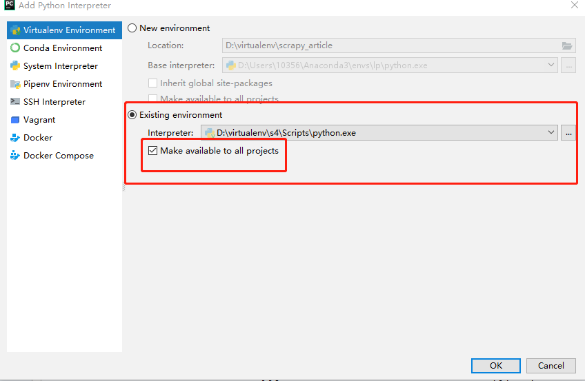

scrapy爬取知名博客网站数据
scrapy安装和配置
- 创建虚拟环境
mkvirtualenv scrapytest
- 进入虚拟环境scrapytest
workon scrapytest
- 在虚拟环境中安装scrapy
pip install -i https://pypi.doubanio.com/simple/ scrapy
- 报错
ERROR: Failed building wheel for Twisted
解决方案： 打开网站 https://www.lfd.uci.edu/~gohlke/pythonlibs/ 搜索Twisted,下载相应版本 (本机python3.8 64位)

- 安装Twisted（cmd进入Twisted安装包所在的目录）
pip install Twisted-20.3.0-cp38-cp38-win_amd64.whl
- 再次执行scrapy安装
pip install -i https://pypi.doubanio.com/simple/ scrapy
scrapy构建项目
- 进入虚拟环境，执行命令
scrapy startproject [项目名]

导入pycharm
- 进入项目目录，并执行命令
cd scrapy_article
scrapy genspider cnblogs https://news.cnblogs.com/
在spider目录下生成cnblogs.py文件
找不到scrapy包，需要配置项目的解释器

需求分析
抓取网站：
启动爬虫项目
命令行执行爬虫：
scrapy crawl cnblogs
使用pycharm调式scrapy
pycharm没有scrapy的模板，无法调试scrapy,解决方案如下：
- step1:创建main.py
from scrapy.cmdline import execute import sys import os print(os.path.dirname(os.path.abspath(__file__))) sys.path.append(os.path.dirname(os.path.abspath(__file__))) execute(["scrapy","crawl","cnblogs"])

- step1:创建main.py
debug运行main.js
进入parse函数，代表着start_urls已经被下载完成
def parse(self, response):
pass

settings.py修改参数
# Obey robots.txt rules
ROBOTSTXT_OBEY = False
xpath
- xpath简介
xpath使用路径表达式在xml和html中进行导航
xpath包含标准函数库
xpath是一个W3C的标准
- xpath节点关系
1，父节点
2，子节点
3，同袍节点
4，先辈节点
5，后代节点
xpath语法


从网页上获取某个元素的xpath路径：

xpath提取元素
命令行下下载指定url网页
scrapy shell url
案例：
scrapy shell https://news.cnblogs.com/n/663347/
提取标题
response.xpath('/html/body/div[2]/div[2]/div[2]/div[1]/a/text()').extract_first() or response.xpath('/html/body/div[2]/div[2]/div[2]/div[1]/a/text()').extract()[0] or response.xpath("//div[@id='news_title']/a/text()").extract_first()
css选择器


- 提取标题
response.css("div#news_title>a::text").extract_first()
获取属性 response.css("div#news_title>a::attr(属性名)").extract_first()